Easy Read guide
Using Squidly
This guide shows you how to join and take part in a Squidly session.
Join with a secure link.
Use your camera and microphone.
Communicate, learn and play.
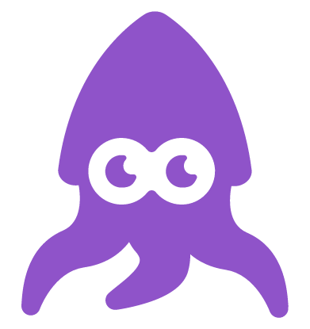

Easy Read guide
This guide shows you how to join and take part in a Squidly session.
Join with a secure link.
Use your camera and microphone.
Communicate, learn and play.


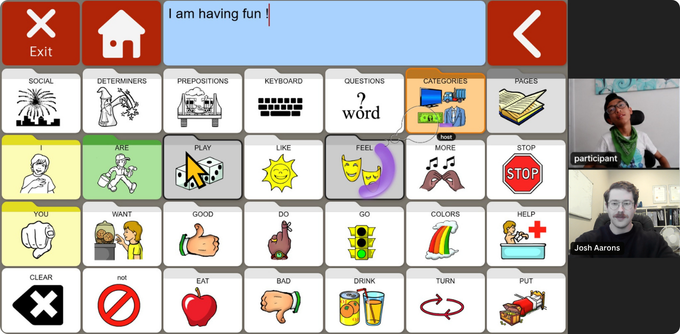
You can see and hear the person you are meeting.
Communication tools and activities can be used inside the call.
You do not need a Squidly account or password.
Clinicians and people with disability helped design Squidly.
Squidly works like Zoom or Google Meet.
It has accessibility tools built in to help more people take part.

Use a computer, laptop or tablet.
Make sure your internet connection is working.
Have your camera, microphone and speakers ready.
This might be a switch, joystick, eye-gaze device, communication device, keyboard or mouse.
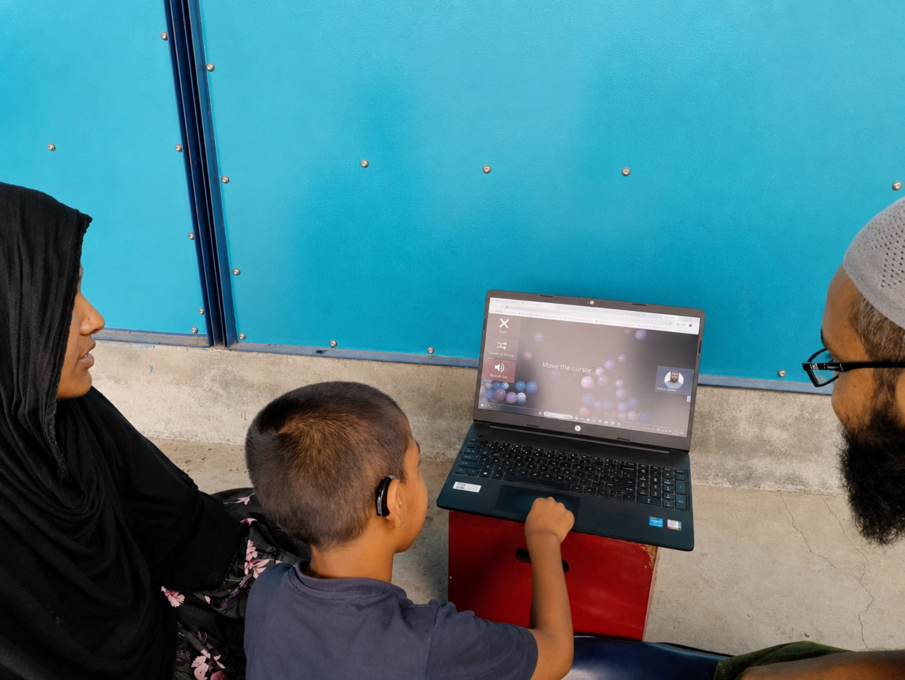
Google Chrome is recommended.
Ask your clinician if you are not sure which browser to use.


Your clinician will send you a secure Squidly link.
Click the link.
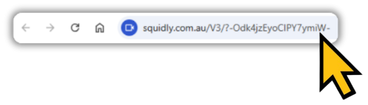
Your browser may ask for permission.
Choose Allow.
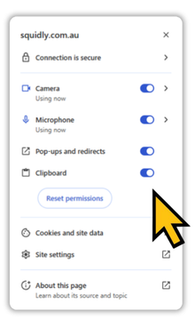
You do not need to log in.
Your clinician will appear when the session starts.
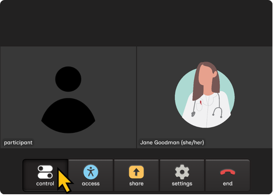
If the call does not connect, wait about 10 seconds.
Then refresh the page or contact your clinician.


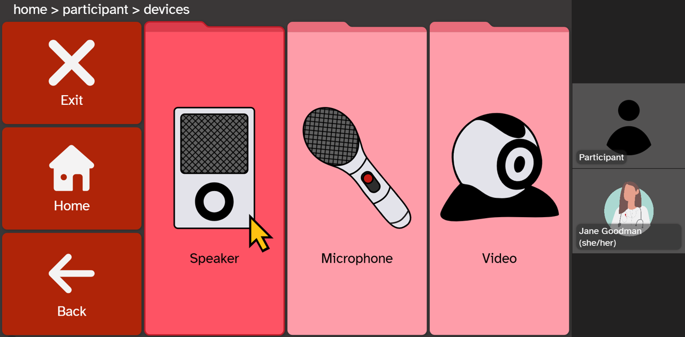
Your camera lets the other person see you.
Your microphone lets the other person hear you.
Tell your clinician if you cannot see, hear or be heard.
You can turn your camera or microphone off when you need to.


Use the access method that works for you.
AAC or a communication device
Eye gaze
A switch
Touch or supported touch
Mouse, keyboard or joystick
A support person, if you choose
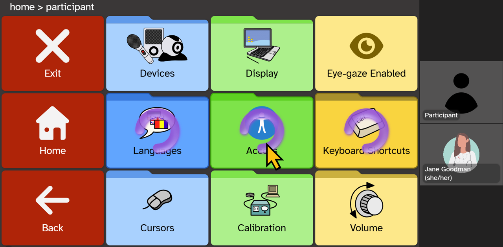
Your clinician can change the session.
They can make buttons bigger, change colours, slow down scanning or change eye-gaze timing.
Tell your clinician if something is difficult or uncomfortable.


Your clinician can open activities inside the call.
Use AAC and communication supports.
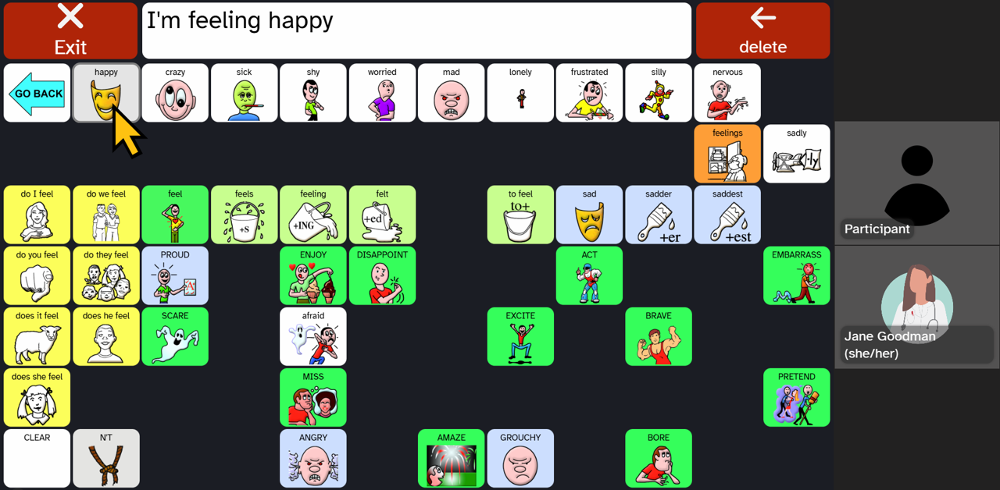
Use accessible games and simple cause-and-effect activities.
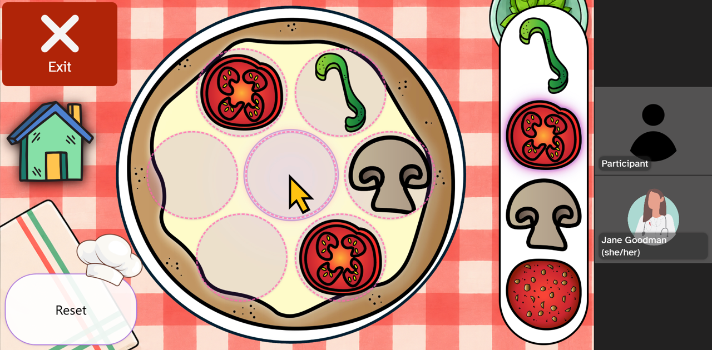
Use language, literacy and learning activities.
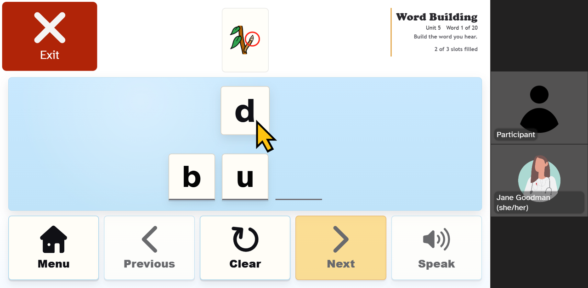
Use quizzes, screening activities and evaluation-style tasks.
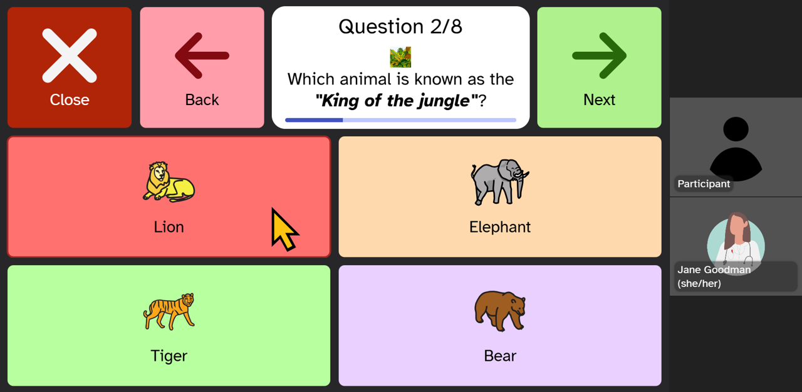
You may also look at pictures, documents or a shared screen.


Here are some common questions about Squidly.
No. Click the secure link your clinician sends you.
No. Squidly opens in your internet browser. Google Chrome is recommended.
Yes. You can use AAC, eye gaze, a switch, touch, a joystick, keyboard or mouse.
Yes. Your clinician can open activities and change settings to make the session easier to use.
Yes. You can turn them off when you need to. Ask your clinician for help if needed.
No. You can also use Squidly for video calls with family, friends and other people. Visit squidly.com.au to learn more about Squidly plans.
You can ask questions at any time.
Your clinician can help you before and during the session.


It is okay to ask for help.
Make sure your device is connected to the internet.
Wait 10 seconds. Then use the refresh button in your browser.
Close the page and click your secure link again.
Open the link in a current version of Google Chrome.
Your clinician can check the link, camera, microphone and settings.
Name:
Phone:
Email:
Squidly support: contact@squidly.com.au